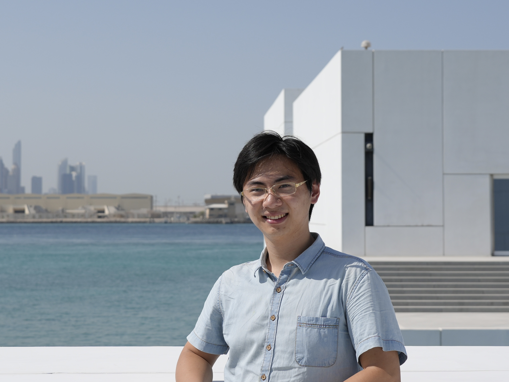

|  |
Yuxing Chen (陈煜星)I am a first-year PhD student at EPIC lab, School of Computer Science at Peking University, advised by Professor He Wang. Currently my main research interests include: physics simulation, deformable object manipulation and dexterous hand. In 2024, I received my Bachelor's degree from the School of Physics at Peking University. |
Jiangran Lyu, Yuxing Chen, Tao Du, Feng Zhu, Huiquan Liu, Yizhou Wang, He Wang
CoRL 2024
Jiayi Chen, Yuxing Chen, Jialiang Zhang, He Wang
IROS 2024
Yuxing Chen, Songlin Wei, Bowen Xiao, Jiangran Lyu, Jiayi Chen, Feng Zhu, He Wang